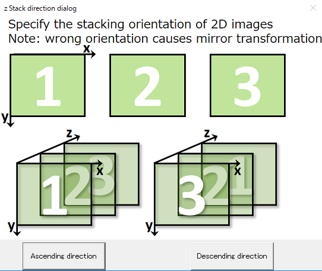

RoiPainter I/O

RoiPainter I/O Visualization Segmentation
I/O in RoiPainter
RoiPainterでのデータの読み込みと書き出しについての説明です．
Open data
D-1) file > Open traw3d (.traw3d_ss, .pvm)
D-2) file > Open Weather data (.txt)
D-3) file > Open slices (bmp, tif)
D-4) file > Open DCM slices (.dcm)
D-5) file > Open 3D DCM (.dcm)
Save and Load mask
M-1) file > Save Mask
M-2) file > Load Mask
M-3) file > Save Mask as fav
Export volume
Ev-1) file > Export Volume As traw3d_ss
Export and Import camera position
C-1) MISCS > Export Current Camera
C-2) MISCS > Import Camera Position
D-1) file > Open traw3d (.traw3d_ss, .pvm)
D-2) file > Open Weather data (.txt)
D-3) file > Open slices (bmp, tif)
D-4) file > Open DCM slices (.dcm)
D-5) file > Open 3D DCM (.dcm)
Save and Load mask
M-1) file > Save Mask
M-2) file > Load Mask
M-3) file > Save Mask as fav
Export volume
Ev-1) file > Export Volume As traw3d_ss
Export and Import camera position
C-1) MISCS > Export Current Camera
C-2) MISCS > Import Camera Position
Open data
D-1) file > Open traw3d (.traw3d_ss, .pvm)
- 独自形式 traw3d_ss ファイルを読み込みます． このファイルは，ピッチ情報を持ち，一つの画素をsigned short（16bit）として保持します． データフォーマットの詳細は，こちらを参照してください．
D-2) file > Open Weather data (.txt)
- 開発者用の項目です．テキスト形式で保持された3次元気象データを読み込みます．
D-3) file > Open slices (bmp, tif)
- bmpまたはtifスライス画像を読み込みます．
D-4) file > Open DCM slices (.dcm)
- Dicom スライス画像を読み込みます．実装にはDCMTKを利用しています．
D-5) file > Open 3D DCM (.dcm)
- 3次元Dicom画像（ひとつのDicomファイルで3次元画像を保持する形式）を読み込みます．
Save and Load mask
M-1) file > Save Mask
- 作成したマスクデータを独自形式（.msk）で保存します．
M-2) file > Load Mask
- マスクデータ（.msk）を読み込みます．作成中のマスクデータが上書きされるので注意してください．
M-3) file > Save Mask As Fav
- 作成したマスクデータを，.fav形式にて出力します．
fav形式の詳細はこちらより
Export volume
Ev-1) file > Export Volume As traw3d_ss
- 現在読み込んである画像データをtraw3d_ss形式にて保存します．
Export and Import camera position
C-1) MISCS > Export Current Camera
- 現在のカメラ位置をテキスト形式で保存します．論文の図表作成などに利用するために実装しました．
C-2) MISCS > Import Camera Position
- 上で保存したカメラ位置情報を読み込み，カメラ位置を移動します．
入力データを積み重ねる方向について
RoiPainterは，bmp/dcm/tifなど二次元スライス画像や，traw3d_ss/3d dicomなどの3次元画像を読み込みます．
これら3次元画像は，左上が原点（windowsの仕様）の二次元画像を積み重ねた構造を持ちます．
画像データ・マスクデータの読み込み後，RoiPainterは以下のダイアログを表示します．
このダイアログより画像をスタックする方向を指定してください．
※ dcmなど積み重ねる方向をデータ内に含む画像については，自動的に決定されます．

ダイアログ中の図の通り，3次元空間の原点は左上手前になります．
※ 読み込み時にDescending orderを選択した場合，その後画像やマスクをexportすると，z軸方向に反転したものが出力されます．
※ 画像とマスクは同じスタック方向を指定する必要があります．